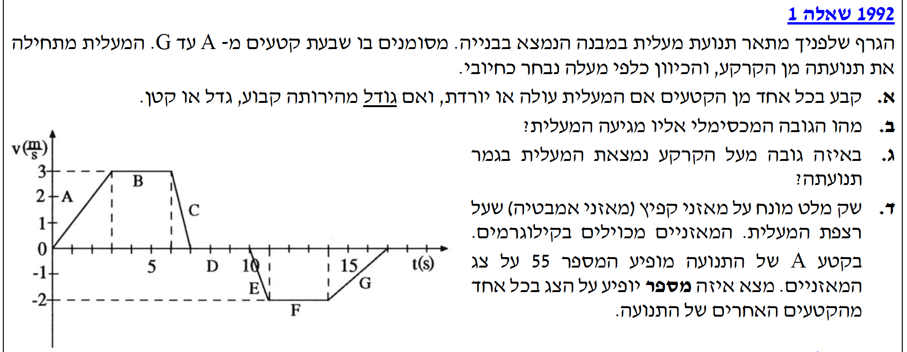
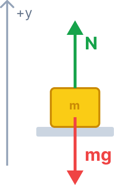

עלינו לקבוע עבור כל אחד משבעת הקטעים (מ-A עד G) האם המעלית עולה או יורדת, והאם גודל המהירות שלה גדל, קטן או נשאר קבוע.
אין צורך בנוסחאות חישוביות בסעיף זה, אלא בהבנה קונספטואלית של גרף מהירות-זמן ושל משמעות סימן המהירות ומרחקה מאפס.
ננתח כל קטע בנפרד על סמך קריאת הגרף. נזכור שסימן המהירות (חיובי או שלילי) קובע את כיוון התנועה, והמרחק של הגרף מציר ה-\( t \) (ערך מוחלט של המהירות) קובע אם גודל המהירות משתנה.
| קטע | סימן המהירות (\( v \)) | כיוון התנועה | גודל המהירות (\( |v| \)) |
|---|---|---|---|
| A | חיובי | עולה | מתרחק מ-0 \(\rightarrow\) גדל |
| B | חיובי | עולה | נשאר על 3 \(\rightarrow\) קבוע |
| C | חיובי | עולה | מתקרב ל-0 \(\rightarrow\) קטן |
| D | אפס | במנוחה (לא עולה ולא יורדת) | נשאר על 0 \(\rightarrow\) קבוע |
| E | שלילי | יורדת | מתרחק מ-0 מטה \(\rightarrow\) גדל |
| F | שלילי | יורדת | נשאר על -2 \(\rightarrow\) קבוע |
| G | שלילי | יורדת | מתקרב ל-0 מעלה \(\rightarrow\) קטן |
אנו מחפשים את הגובה המקסימלי אליו מגיעה המעלית. גובה זה מושג בדיוק בסיום שלב העלייה שלה, כלומר ברגע \( t = 7\text{ s} \) לפני שהיא מתחילה לרדת.
כאשר נתון לנו גרף מהירות-זמן, הדרך הפשוטה והבטוחה ביותר למצוא את ההעתק היא חישוב השטח הכלוא בין גרף המהירות לבין ציר הזמן. השטח שמעל לציר הזמן חיובי ומייצג העתק כלפי מעלה.
הצורה שנוצרת מקטעים A, B ו-C היא טרפז. בסיסו התחתון נמשך מ-\( t=0 \) עד \( t=7 \), בסיסו העליון נמשך מ-\( t=3 \) עד \( t=6 \), וגובה הטרפז הוא המהירות המקסימלית \( v=3\text{ m/s} \).
נחשב את שטח הטרפז (\( S = \frac{(a+b)\cdot h}{2} \)):
\[ \Delta y = \frac{(7 - 0) + (6 - 3)}{2} \cdot 3 \]
\[ \Delta y = \frac{7 + 3}{2} \cdot 3 \]
\[ \Delta y = \frac{10}{2} \cdot 3 = 5 \cdot 3 = 15\text{ m} \]
מכיוון שהמעלית התחילה מן הקרקע (\( y_{0} = 0 \)), ההעתק שווה לגובה הסופי בשלב זה.
אנו מחפשים את הגובה הסופי של המעלית מעל הקרקע בגמר כל התנועה (ברגע \( t = 17\text{ s} \)).
בדיוק כפי שעשינו בסעיף הקודם, נחשב את ההעתק בשלב הירידה על ידי חישוב השטח הכלוא בין הגרף לציר הזמן עבור קטעים E, F ו-G. הפעם השטח נמצא מתחת לציר הזמן, ולכן ייצג העתק שלילי.
הצורה הנוצרת שוב היא טרפז. בסיסו העליון (על ציר ה-\( t \)) נמשך מ-\( t=10 \) עד \( t=17 \), בסיסו התחתון נמשך מ-\( t=11 \) עד \( t=14 \), ו"גובה" הטרפז (שיעור המהירות) הוא \( -2\text{ m/s} \).
נחשב את שטח הטרפז של הירידה:
\[ \Delta y_{\text{down}} = \frac{(17 - 10) + (14 - 11)}{2} \cdot (-2) \]
\[ \Delta y_{\text{down}} = \frac{7 + 3}{2} \cdot (-2) \]
\[ \Delta y_{\text{down}} = 5 \cdot (-2) = -10\text{ m} \]
כעת נחבר את ההעתק השלילי הזה לגובה שממנו התחילה הירידה (\( 15\text{ m} \)):
\[ y_{\text{final}} = y_{\text{max}} + \Delta y_{\text{down}} \]
\[ y_{\text{final}} = 15 - 10 = 5\text{ m} \]
אנו מתבקשים למצוא את המספר שיופיע על צג המאזניים (ה"מסה המדומה") בכל אחד משאר הקטעים (מ-B עד G). לשם כך עלינו למצוא תחילה את מסתו האמיתית של שק המלט, ולאחר מכן לחשב את הכוח הנורמלי בכל קטע לפי התאוצה המתאימה.
שלב 0 - הבנת המאזניים: מאזני קפיץ אינם מודדים מסה אלא מודדים את הכוח הנורמלי (\( N \)) שהם מפעילים כלפי מעלה על הגוף. מכיוון שהם "מכוילים בקילוגרמים", המספר על הצג הוא הכוח הנורמלי מחולק ב-\( g \). מכאן שנוכל להמיר את נתוני קטע A חזרה לכוח במונחי MKS: \[ N_{A} = 55 \cdot 10 = 550\text{ N} \]
נשרטט תרשים כוחות חופשי (FBD) עבור שק המלט במעלית. על השק פועלים כוח הכובד (\( mg \)) כלפי מטה והכוח הנורמלי מהמאזניים (\( N \)) כלפי מעלה. כיוון שהגדרנו מעלה כחיובי, תאוצת הגוף תסומן ב-\( a_{y} \).

נרשום את משוואת החוק השני של ניוטון עבור שק המלט (בציר \( y \)):
\[ \Sigma F_{y} = N - mg = ma_{y} \quad \Rightarrow \quad N = m(g + a_{y}) \]
משוואה זו היא "משוואת הנורמל" שלנו, והיא תלווה אותנו לאורך כל הסעיף!
בשלב הראשון, נשתמש בה כדי למצוא את המסה האמיתית \( m \). לשם כך עלינו למצוא את התאוצה \( a_{y} \) בקטע A בעזרת שיפוע הגרף:
\[ a_{A} = \frac{\Delta v}{\Delta t} = \frac{3 - 0}{3 - 0} = 1\text{ m/s}^{2} \]
נציב את הנתונים (\(N=550\text{ N}, g=10\text{ m/s}^2, a_{A}=1\text{ m/s}^2\)) בתוך "משוואת הנורמל":
\[ 550 = m(10 + 1) \]
\[ 550 = 11m \quad \Rightarrow \quad m = 50\text{ kg} \]
כעת, כשאנו יודעים שהמסה היא \(50\text{ kg}\), נחזור אל "משוואת הנורמל" הכללית שיצרנו קודם, נציב בה את המסה ואת תאוצת הכובד (\(g=10\)) ונקבל את הנוסחה לחישוב הנורמל בכל שאר קטעי התנועה:
\[ N = 50(10 + a_{y}) \]
מכיוון שהמאזניים מכוילים בקילוגרמים, נחלק את הכוח הנורמלי ב-10 כדי לקבל את קריאת המאזניים (\( M_{\text{read}} \)):
\[ M_{\text{read}} = \frac{N}{10} = 5(10 + a_{y}) \]
כעת, נחשב את התאוצות בכל שאר הקטעים (מהזמנים המדויקים מהגרף) ונציב במשוואה: